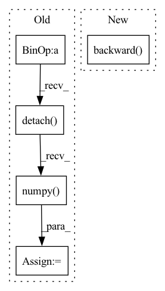

Pattern ID :5668

Before Change
pl_penalty = (pl_lengths - pl_mean).square()
loss_Gpl = pl_penalty * self.pl_weight
loss_Gpl = (gen_img[:, 0, 0, 0] * 0 + loss_Gpl).mean() * float(gain)
loss_numpy["loss_Gpl"] = loss_Gpl.cpu().detach().numpy()
with torch.autograd.profiler.record_function("Gpl_backward"):
loss_Gpl.backward() // 咩酱：gain即上文提到的这个阶段的训练间隔。
if self.align_grad:
mapping = self.mapping.module if self.is_distributed else self.mapping
After Change
// loss4 += loss3
with torch.autograd.profiler.record_function(name + "_backward"):
// loss4.backward() // 咩酱：gain即上文提到的这个阶段的训练间隔。
(real_logits * 0 + loss_Dreal + loss_Dr1).mean().mul(gain).backward()
if self.align_grad:
mapping = self.mapping.module if self.is_distributed else self.mapping
synthesis = self.synthesis.module if self.is_distributed else self.synthesis
discriminator = self.discriminator.module if self.is_distributed else self.discriminator
In pattern: SUPERPATTERN
Frequency: 3
Non-data size: 5
Instances
Fragment ID: 19884221
Project Name: miemie2013/miemiegan
Commit Name: 308da226a2d1e0dc4f2c0543c80e1904d79a3bf1
Time: 2022-04-09
Author: 53960695+miemie2013@users.noreply.github.com
File Name: mmgan/models/architectures/styleganv2ada_model.py
M Class Name: StyleGANv2ADAModel
N Class Name: StyleGANv2ADAModel
M Method Name: accumulate_gradients(9)
N Method Name: accumulate_gradients(9)
M Parent Class:
N Parent Class:
M File Name: mmgan/models/architectures/styleganv2ada_model.py
N File Name: mmgan/models/architectures/styleganv2ada_model.py
M Start Line: 184
M End Line: 353
N Start Line: 208
N End Line: 356
'>
Before Change
pl_penalty = (pl_lengths - pl_mean).square()
loss_Gpl = pl_penalty * self.pl_weight
loss_Gpl = (gen_img[:, 0, 0, 0] * 0 + loss_Gpl).mean() * float(gain)
loss_numpy["loss_Gpl"] = loss_Gpl.cpu().detach().numpy()
loss_Gpl.backward() // 咩酱：gain即上文提到的这个阶段的训练间隔。
// Dmain: Minimize logits for generated images.
loss3 = 0.0
After Change
// loss_G = loss_Gmain
// loss_G = loss_G * float(gain)
// loss_G.backward() // 咩酱：gain即上文提到的这个阶段的训练间隔。
loss_Gmain.mean().mul(gain).backward()
// Gpl: Apply path length regularization.
if do_Gpl:
// print("----------------- do_Gpl -----------------")
'>
Fragment ID: 19884220
Project Name: miemie2013/miemiegan
Commit Name: cf43a0a8db722386b89e71d5d33b472774867ea1
Time: 2022-02-24
Author: 53960695+miemie2013@users.noreply.github.com
File Name: mmgan/models/architectures/styleganv2ada_model.py
M Class Name: StyleGANv2ADAModel
N Class Name: StyleGANv2ADAModel
M Method Name: accumulate_gradients(8)
N Method Name: accumulate_gradients(8)
M Parent Class: torch.nn.Module
N Parent Class: torch.nn.Module
M File Name: mmgan/models/architectures/styleganv2ada_model.py
N File Name: mmgan/models/architectures/styleganv2ada_model.py
M Start Line: 148
M End Line: 236
N Start Line: 176
N End Line: 268
'>
Before Change
policy_loss_value = policy_loss.detach().cpu().numpy()
//entropy loss
entropy_loss = -torch.mean(dist_entropy)
entropy_loss_value = entropy_loss.detach().cpu().numpy()
tot_loss = v_loss + entropy_loss + policy_loss
self.policy_optimizer.zero_grad()
self.v_optimizer.zero_grad()
After Change
raise NotImplementedError
policy_loss_value = policy_loss.detach().cpu().numpy()
self.policy_optimizer.zero_grad()
policy_loss.backward()
self.policy_optimizer.step()
//compute value loss
v_loss = F.mse_loss(curr_state_v, future_return_batch)
'>
Fragment ID: 19884217
Project Name: x35f/unstable_baselines
Commit Name: 6c5f28faf8eed273f859610adbd71a0361d36112
Time: 2021-03-31
Author: 1621322691@qq.com
File Name: ppo/model.py
M Class Name: PPOAgent
N Class Name: PPOAgent
M Method Name: update(2)
N Method Name: update(2)
M Parent Class: BaseAgent,torch.nn.Module
N Parent Class: BaseAgent,torch.nn.Module
M File Name: ppo/model.py
N File Name: ppo/model.py
M Start Line: 93
M End Line: 116
N Start Line: 96
N End Line: 125